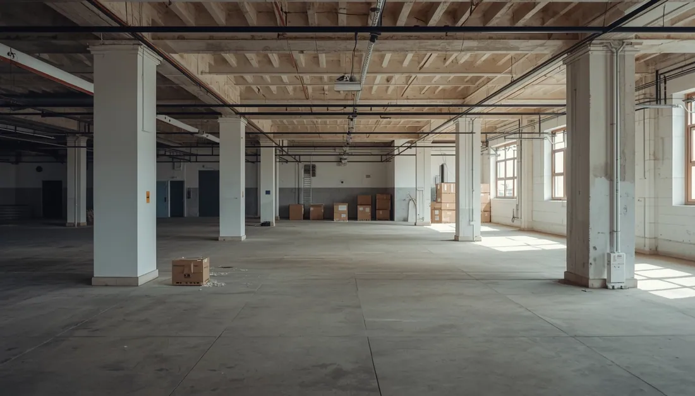
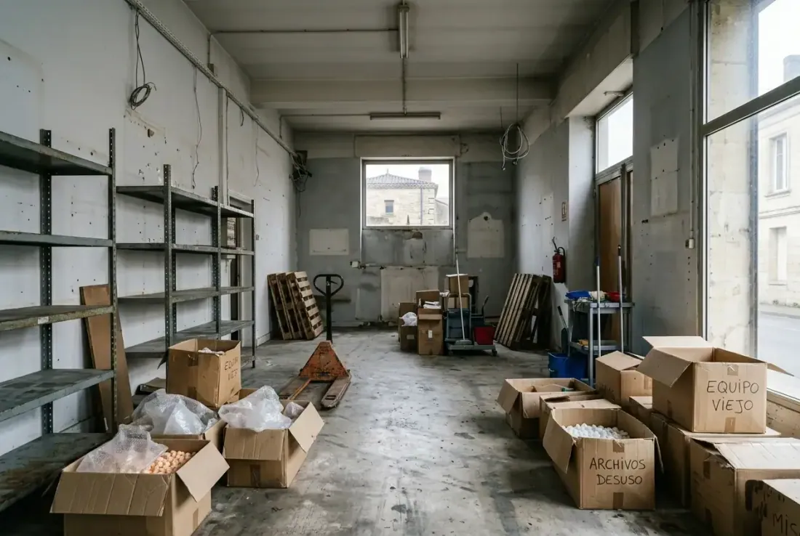
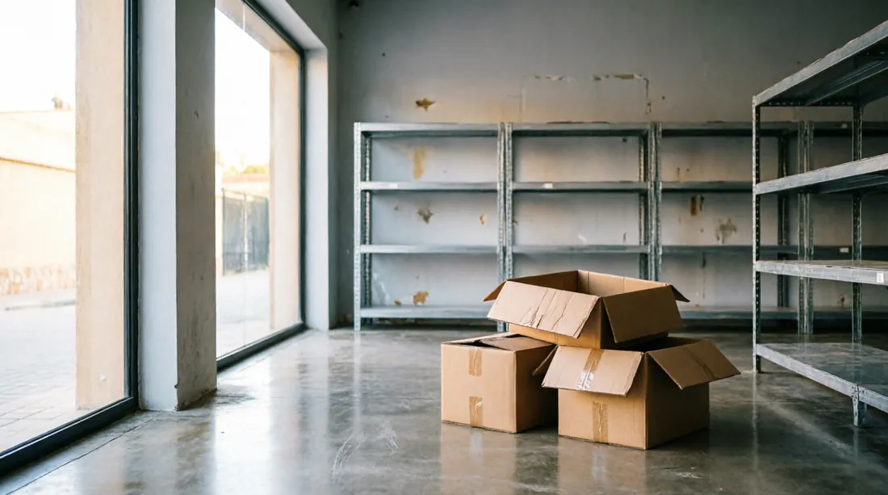

El vaciado de una oficina o un local comercial no es lo mismo que el de una vivienda. Hay plazos de contrato que cumplir, mobiliario y equipos que retirar sin dañar el inmueble, documentación confidencial que proteger y, muchas veces, la necesidad de hacerlo fuera del horario laboral para no interrumpir la actividad. En VaciadoDePisos.cat llevamos años ayudando a empresas, autónomos y administradores de fincas de Barcelona y provincia a cerrar este tipo de procesos con rapidez y sin complicaciones.
¿Cuándo se necesita vaciar una oficina o un local?
Cierre de actividad
La empresa cesa o cierra una sede y hay que dejar el espacio vacío y limpio antes de entregarlo.
Traslado o mudanza
Os cambiáis de local u oficina y necesitáis retirar lo que no se traslada al nuevo espacio.
Traspaso
Hay que entregar el local vacío al nuevo titular o dejarlo listo para el traspaso.
Fin de contrato de alquiler
El arrendamiento termina y el contrato obliga a devolver el local en su estado original.
Liquidación o concurso
Liquidación de activos, herencia de un negocio o cierre por concurso de acreedores.
Antes de una reforma
Hay que despejar por completo el espacio antes de iniciar obras o un cambio de imagen.

Qué incluye nuestro servicio
Mobiliario de oficina y local
Mesas, sillas, mostradores, estanterías, archivadores, mamparas, vitrinas y mobiliario a medida.
Equipos informáticos (RAEE)
Ordenadores, impresoras, servidores y electrónica, con gestión como residuo electrónico certificado.
Archivo y documentación
Retirada de archivo y, si lo necesita, destrucción confidencial de documentación sensible.
Instalaciones de local
Rótulos, expositores, cámaras frigoríficas, cocinas de hostelería y elementos fijos no estructurales.
Gestión legal de residuos
Separación, transporte y entrega a gestor autorizado por la ARC, con certificado del proceso.
Limpieza final
Dejamos el espacio vacío y limpio, listo para entregar, traspasar o reformar.
Confidencialidad y residuos: lo que una empresa necesita
- Destrucción confidencial de documentación y datos sensibles bajo petición.
- Gestión de equipos informáticos como RAEE, con su certificado.
- Residuos comerciales tratados con gestor autorizado por la ARC.
- Factura con IVA y facturación flexible para empresas y autónomos.

Tipos de espacios que vaciamos
Oficinas y despachos
Desde un despacho profesional hasta plantas de oficinas completas.
Comercios y tiendas
Locales a pie de calle, comercios y espacios de retail.
Hostelería
Bares, restaurantes y cafeterías, incluida maquinaria y mobiliario específico.
Almacenes y trasteros
Pequeños almacenes, trasteros comerciales y espacios de stock.
¿Buscas el vaciado de una nave industrial? Tenemos una página específica para ese caso.
Qué influye en el precio
- El volumen y la cantidad de mobiliario, equipos y residuos.
- El acceso: planta, ascensor (o su ausencia) y facilidad de carga.
- El tipo de residuo (RAEE, voluminosos, residuos especiales).
- La urgencia y si hay que trabajar fuera de horario o en fin de semana.
- Si se recupera valor de mobiliario o equipos reutilizables.
- Servicios añadidos: destrucción documental, limpieza final, pequeñas reparaciones.
Por eso no damos un precio "a ojo": hacemos una valoración gratuita y un presupuesto cerrado. Lo que presupuestamos es lo que paga.

Cómo trabajamos, paso a paso
Contacto
Nos cuenta el espacio, el plazo y si hay que trabajar fuera de horario.
Valoración gratuita
Evaluamos el local y le damos un presupuesto cerrado, con factura.
Ejecución sin parar tu negocio
Vaciamos con rapidez, si hace falta de noche o en festivo, para no afectar a la actividad.
Entrega y certificados
Le entregamos el espacio vacío y limpio, con los certificados de gestión de residuos.
Por qué elegirnos
- Experiencia con empresas, autónomos y administradores de fincas.
- Trabajamos fuera de horario para no interrumpir tu actividad.
- Factura con IVA y precio cerrado por escrito.
- Gestión legal de residuos y RAEE con certificado ARC.
- Destrucción confidencial de documentación bajo petición.
- 5.0 ★ en Google con 51 reseñas reales.
¿Necesita vaciar una oficina o un local?
Cuéntenos su caso y le damos un presupuesto cerrado, con factura y sin compromiso.
Preguntas frecuentes
Sí. Podemos vaciar la oficina o el local de noche, a primera hora o en fin de semana para no interrumpir vuestra actividad ni molestar a clientes o empleados.
Sí, emitimos factura con IVA y ofrecemos facturación flexible para empresas y autónomos. El presupuesto es cerrado, sin sorpresas.
Sí, bajo petición gestionamos la destrucción confidencial de archivo y documentación con datos sensibles, de forma segura.
Los ordenadores, impresoras y electrónica se gestionan como residuo electrónico (RAEE) a través de gestor autorizado, con su certificado.
Respondemos en menos de 1 hora y, según el volumen y el acceso, solemos ejecutar el vaciado en 24-48 horas. Para urgencias, consúltenos.
Cubrimos Barcelona ciudad y toda la provincia, incluyendo el área metropolitana, el Vallès, el Garraf y comarcas cercanas.